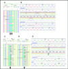

Recent Activity
Recent Activity
 Clipboard
Clipboard


|
Genet Med. Author manuscript; available in PMC 2012 November 1. Published in final edited form as: PMCID: PMC3398737 NIHMSID: NIHMS385394 Targeted PCR-based enrichment and next generation sequencing for diagnostic testing of congenital disorders of glycosylation (CDG)1Department of Human Genetics, Emory University School of Medicine, Atlanta, GA 2Genetic Disease Program, Sanford-Burnham Medical Research Institute, La Jolla, CA Correspondence: Madhuri Hegde, Whitehead Biomedical Research Building, 615 Michael St., Ste. 301, Atlanta, GA 30322. Phone: 404-727-3863 Fax: 404-727-3949 ; Email: mhegde@emory.edu AbstractPurposeCongenital disorders of glycosylation (CDG) are a heterogeneous group of disorders caused by deficient glycosylation, primarily affecting the N-linked pathway. It is estimated that over 40% of CDG patients lack a confirmatory molecular diagnosis. The purpose of this study was to improve molecular diagnosis for CDG by developing and validating a next generation sequencing (NGS) panel for comprehensive mutation detection in 24 genes known to cause CDG. MethodsNGS validation was performed on 12 positive control CDG patients. These samples were blinded as to the disease causing mutations. Both RainDance and Fluidigm platforms were used for sequence enrichment and targeted amplification. The SOLiD platform was used for sequencing the amplified products. Bioinformatic analysis was performed using NextGENe® software. ResultsThe disease causing mutations were identified by NGS for all 12 positive controls. Additional variants were also detected in three controls that are known or predicted to impair gene function and may contribute to the clinical phenotype. ConclusionsWe conclude that development of NGS panels in the diagnostic laboratory where multiple genes are implicated in a disorder is more cost-effective and will result in improved and faster patient diagnosis compared with a gene-by-gene approach. Recommendations are also provided for data analysis from the NGS-derived data in the clinical laboratory, which will be important for the widespread use of this technology. Keywords: congenital disorders of glycosylation, next generation sequencing, molecular diagnostic testing, target enrichment, bioinformatics INTRODUCTIONAbout 50% of all proteins in the human genome are N-glycosylated.1 These N-glycosylated proteins are important for a variety of different biological processes including intracellular targeting, cell-cell recognition, protein folding and stability and in the immune response;2 hence, the proper development and functioning of many organ systems depend on normal N-glycosylation. Deficient N-glycosylation results in multiple organ dysfunction that can be life threatening.3 Congenital disorders of glycosylation (CDG) are a group of over 30 autosomal recessive disorders caused by deficient glycosylation, primarily affecting the N-linked pathway.4 Symptoms of CDG can include severe developmental delay, ataxia, seizures, liver fibrosis, retinopathy, cardiac dysfunction and coagulopathies.3,5 CDG occurs worldwide, with an estimated prevalence as high as 1 in 20,000.6 Significant morbidity and mortality is associated with this disorder with 20% of children not surviving beyond 5 years of age.7,8 Most children who do survive go on to face significant medical problems throughout their lives. Traditionally, patients are classified as having either Type I or Type II CDG.3,9 Type I CDGs are caused by defects in gene products located in the cytoplasm or the endoplasmic reticulum that create the dolichol-bound sugar chain precursors or in genes that enable transfer of these precursor glycans to proteins.3 Type II CDGs are caused by defects in gene products that are primarily located in or associated with the Golgi apparatus where the protein-bound N-glycans are modified.3 Combined Type I and Type II defects have recently been reported in a number of affected individuals, making an accurate diagnosis in these patients more of a challenge.14–17 The classification of different subtypes of CDG has traditionally been alphabetized according to the order of discovery,10,11 although the CDG nomenclature has now been updated, with the gene name followed by the suffix “–CDG” for designating different subtypes of CDG.12,13 The variability of symptoms, age of diagnosis and the severity of disease within and between subtypes pose a great challenge to pediatric health care providers and contributes to the underdiagnosis of these disorders.9,18 Moreover, the phenotypes are not fully delineated for many subtypes of CDG because only a few patients have been reported. Currently, efficient treatment is only available for CDG-Ib via oral mannose supplementation, although fucose supplementation is also used for some patients diagnosed with CDG-IIc. Unfortunately, for all other subtypes only supportive therapies and symptom-based treatments are available. Diagnosis of CDGThe first diagnostic step to take when a clinician suspects their patient may be afflicted with CDG is to evaluate serum transferrin by isoelectric focusing or mass spectrometry.19,20 A diagnosis of CDG is based on an abnormal serum transferrin pattern which can indicate whether a patient has a Type I or Type II defect. Although this method is a rapid screen for CDG, it cannot pinpoint the specific gene defect and is prone to both false-positive and false-negative results.14–16,20 Furthermore, several CDG types (CDG-IIb, CDG-IIc, CDG-IIf) present with a normal transferrin pattern, leading to an underdiagnosis of these subtypes.3 If biochemical analysis results in a diagnosis of CDG, it is then important to identify the gene defect because there are effective therapies for several subtypes of CDG. Established assays that measure enzyme activity are available for some gene products within the pathway.16,21 The N-glycosylation biosynthesis pathway can also be analyzed in patients by evaluating lipid (dolichol) linked oligosaccharide (LLO) levels, LLO structures and the accumulation of LLO intermediates via HPLC.21,22 This method can provide insight into the possible deficient enzyme and is very useful for diagnosing Type I CDGs. Over the past 20 years, mutant strains of yeast for nearly all of the steps in LLO assembly have been characterized and comparison of patient LLO structures with the LLO structures of yeast mutants can also pinpoint the specific defect in a patient.23–26 Additional analysis of the N-glycosylation biosynthesis pathway includes the assessment of glycan structures by MALDI-TOF-MS analysis.27 This technique can also provide insight into which enzyme is defective and is useful in distinguishing mixed Type I and Type II CDGs from Type II CDGs. If biochemical analysis suggests a specific gene or set of genes then mutation analysis is performed by sequencing all of the exons from the candidate genes. However, biochemical analysis can not always pinpoint a gene, but rather only indicates whether the CDG is Type I or II or mixed Type I and II. If two truncating or previously reported missense mutations are found, a report is issued. If the variants have not been reported, genetic complementation studies using viral vectors or yeast are commonly performed to confirm whether the identified variants impair glycosylation.28–31 In addition, molecular studies including transcript analysis, expression analysis, and the use of online prediction programs including PolyPhen, SIFT and PANTHER can also help reveal whether the variants are deleterious. If these variants are confirmed to be deleterious, then the patient is diagnosed with a specific subtype of CDG. Gene-by-gene mutation detection via Sanger sequencing is the current method for definitive diagnosis of CDG patients. Gene sequencing is ideal as most of the mutations identified to date in CDG patients are point mutations, small insertions and deletions. Unfortunately, a comprehensive molecular diagnostic approach is not feasible with Sanger sequencing because of the costs and time involved for screening a group of genes that are implicated in CDG. It is estimated that over 40% of patients diagnosed with CDG lack a confirmatory molecular diagnosis, due either to the limited molecular diagnostic testing available for this disorder or to patients having mutations in new genes not yet associated with CDG (Susan Sparks, personal communication). Due to the genetic heterogeneity and the severity of this disorder there is a need to implement a high throughput assay in the clinical setting, which appears to be desirable and beneficial for CDG patients who currently lack genetic characterization. Within the last five years, high throughput sequencing (HTS) technology referred to as next generation sequencing (NGS) has successfully identified mutations in genes for a number of conditions including Sensenbrenner syndrome, Kabuki syndrome and Miller syndrome.32–34 NGS is also used for targeted resequencing applications and offers the unique opportunity to rapidly sequence all of the relevant genes for a disorder in each patient. This technique is very attractive to molecular genetic diagnostic laboratories because it affords the opportunity to provide patients with a rapid and accurate diagnosis. Targeted resequencing requires a dual approach using sequence enrichment and NGS. A number of different target enrichment strategies are now available including microarray based capture, in solution capture and PCR-based capture.35–37 Two platforms are available for PCR-based capture. The platform introduced by RainDance Technologies™ (Lexington, MA) is a microdroplet based method whereas the platform introduced by Fluidigm™ (San Francisco, CA) uses the Access Array microfluidic platform.37–39 After PCR, the amplified products are collected for each sample and prepared for NGS. There are several NGS platforms to choose from for targeted resequencing applications including Roche 454 GS FLX, Illumina Genome Analyzer, Applied Biosystems SOLiD, Helicos Biosciences HeliScope and Pacific Biosciences SMRT.40,41 Here, the development and validation of a NGS panel using the PCR-based capture methodologies RainDance and Fluidigm and the Applied Biosystems SOLiD platform to detect mutations in 24 known CDG genes is described, which allows for comprehensive molecular diagnostic testing for this disorder. MATERIALS AND METHODSAll development was performed at Emory Genetics Laboratory (EGL) which is a CLIA and CAP accredited high complexity laboratory. Positive control samplesAnonymous DNAs from 12 positive control CDG samples were provided by Dr. Hudson Freeze. These patients were previously analyzed biochemically and full gene sequencing analysis confirmed disease causing mutations in known CDG genes. Samples were collected by Dr. Freeze under an approved IRB from the Sanford-Burnham Medical Research Institute and written informed consent was obtained for all patients. Primers for individual gene exon amplification, polymerase chain reaction (PCR) amplification and Sanger sequencingThe transcript and genomic sequence data for all 24 CDG genes were accessed from the UCSC genome browser (http://genome.ucsc.edu/) and the Human Gene Mutation Database (http://www.hgmd.cf.ac.uk/ac/index.php). Based on this information, primers were designed to include at least 50 bp of each flanking intron. All primers were designed using Primer3.0 (http://frodo.wi.mit.edu/primer3/). To avoid overlap with single nucleotide polymorphisms (SNPs), all primers were checked using an in-house developed bioinformatics primer design script written using Perl against the National Center for Biotechnology Information SNP database (http://www.ncbi.nlm.nih.gov/SNP/) and the 1000 Genomes Project. Primers were also checked for repeat regions using the Repeat Masker program. Primers identified as containing a SNP or repeat regions were redesigned. A total of 288 unique primer pairs were created for all 24 genes. Primer pair sequences and amplicon sizes are available upon request. RainDance library preparation and DNA enrichmentA list of the 24 CDG genes was provided to RainDance Technologies™. A custom library was prepared and primers were designed for all 215 coding exons (387 PCR amplicons) of these 24 genes including 50 bp of each flanking intron. The library amplicons ranged in size from 201–617bp, with a GC content of 25–70% and a total sequence of 101kb. Oligos were synthesized, primer droplets were prepared and all of these droplets were pooled together to create the custom library. The RainDance library was checked for SNPs using Perl against the National Center for Biotechnology Information SNP database and for repeat regions using the Repeat Masker program. A total of 1.5µg of genomic DNA for was used for each positive control for DNA enrichment. The primer library and a template mix that included 1.5µg of fragmented genomic DNA and all of the components of the PCR reaction excluding the primers were loaded on RainDance for PCR droplet preparation according to the manufacturer’s instructions. Samples were run on the RDT 1000 machine and PCR droplets were generated. The PCR droplets were then amplified using an Applied Biosystems 9700 thermocycler under the following conditions: 94°C for 2 minutes, 55 cycles of: (94°C for 15 seconds, 54°C for 15 seconds, 68°C for 30 seconds), 68°C for 10 minutes and then hold at 4°C. After amplification the PCR droplets were broken to release the amplicons. The amplicons were purified and the quality of the PCR products were analyzed using the 2100 Bioanalyzer (Agilent Technologies, Inc.). PCR products were subsequently used for SOLiD library preparation and sequencing. Fluidigm library preparation and DNA enrichmentThe Fluidigm library contained the primers designed for individual gene exon amplification, polymerase chain reaction (PCR) amplification and Sanger sequencing of the 24 known CDG genes. A total of 50ng of DNA was used for all 12 positive control samples. DNA enrichment and PCR amplification were performed using the Fluidigm Access Array™ IFC according to the manufacturer’s instructions. Briefly, the samples and primers were loaded individually and combined resulting in all possible combinations of primers and samples. The Access ArrayTMIFC then underwent thermal cycling and all regions of interest were amplified. The PCR amplification conditions are provided in Supplementary Table 1. The PCR products were then harvested and pooled to achieve a final concentration of 300ng. Pooled PCR products were subsequently used for SOLiD library preparation and sequencing. SOLiD sequencing and data analysisAmplified targets were sequenced on the Applied Biosystems SOLiD version 3 sequencer as single-end 50bp reads according to the manufacturer’s instructions. Filters used for mutation detection allowed reads to align if more than 25 bases (50% of read length) matched with a percentage of 60% or more and any calls with a coverage of three or less and where the variant allele percentage was less than or equal to 15% were filtered out. Color reads from SOLiD were mapped to the hg19 reference genome using NextGENe® software. Any base call that differed from the reference base was considered as a potential variant. A spreadsheet was created for each positive control sample that included the nucleotide variant calls for each gene, amino acid changes, coverage and variant frequency from the NCBI dbSNP database. To improve the detection of indels NextGENe® software’s condensation tool was used, which lengthens reads and removes sequencing errors. Recommended settings by SoftGenetics were used. Individual gene amplificationThe Roche FastStart Taq DNA polymerase kit version 4.0 (#04738420001) was used for PCR amplification. Standard reaction conditions for PCR analysis per sample included 50ng of DNA, 200µmol/L primers, 200µmol/L dNTPs, 1× PCR buffer with 1.5µmol/L MgCL2, and 1.25 units/reaction FastStart Taq DNA polymerase in a 96 well plate format. Amplification was performed using an ABI 9700 thermocycler under the following conditions: 95°C for 3 minutes, 10 cycles that decrease 0.5°C/cycle (95°C for 1 minute, 60°C for 1 minute, 72°C for 1 minute), 25 cycles of (95°C for 1 minute, 55°C for 1 minute, and 72°C for 1 minute), 72°C for 7 minutes and then hold at 4°C. All PCR products were examined by gel electrophoresis. Sanger sequencing analysisPCR products were purified using multiscreen 96 well filter plates. Purified PCR products were then cycle sequenced in both the forward and reverse directions using the BigDye Terminator Cycle Sequencing version 3.1 kit (Applied Biosystems). Sequencing reactions contained 4µl of purified PCR product, 1.5µl of dH2O, 1.25µl of v3.1 buffer, 1.5µl of BigDye v3.1 sequencing mix, 1µl of M13 primer (3.2µM), and 0.75µl of DMSO. Amplification was performed using an Applied Biosystems 9700 thermocycler under the following conditions: 24 cycles of (96°C for 10 seconds, 50°C for 5 seconds, and 60°C for 4 minutes) and then hold at 4°C. The products were then sequenced on an Applied Biosystems 3730×l Sequencer. Mutation Surveyor™ software (www.softgenetics.com) was used for sequencing analysis. Patient sequences were compared to wild-type reference sequences and the American College of Medical Genetics (ACMG) guidelines were followed for interpretation of sequence variation.42 RESULTSDevelopment of a CDG NGS panelThere are multiple genes implicated in CDG and current molecular diagnostic testing is a gene- by-gene approach. The severity of this disorder and the fact that over 40% of patients lack a molecular diagnosis made this group of disorders an excellent choice for creating a NGS panel. For this panel, in collaboration with Hudson Freeze, 24 genes were selected that are known to be associated with CDG (Table 1). ALG1 sequencing analysis was included separately because this gene could not be placed on the panel due to the presence of a pseudogene. The number of patients identified with defects in these 24 genes varies, ranging from more than 800 patients with mutations in PMM2 to only one patient identified with mutations in ALG2.43 Defects in most of these genes result in intellectual disability and different degrees of neuromuscular dysfunction.44 The PCR-based enrichment methods RainDance and Fluidigm were used for sequence enrichment, which provide heightened specificity and thus greater accuracy. The Applied Biosystems SOLiD next generation sequencer was the platform of choice for NGS because each base is interrogated twice generating very accurate raw reads ideal for the clinical diagnostic setting.40,41 CDG associated genes included on the clinical CDG NGS panel Validation of a CDG NGS panel for detecting known mutations in CDG patients12 positive control CDG patients were received for validation of the CDG NGS panel. These patients ranged in age from three months to adults and many of these patients had overlapping phenotypes.29–31,45–49 These 12 positive controls were first biochemically characterized and mutations were subsequently identified through sequencing of candidate genes. All mutations were confirmed by parental testing. In addition, these mutations were determined to be disease-causing via biochemical and genetic complementation studies.29–31,45–49 Samples were blinded as to the disease-causing mutations. Both RainDance and Fluidigm PCR methods were used to enrich all coding exon sequences for the 24 known CDG genes for each patient. After PCR enrichment, samples were prepared for NGS and sequenced using the SOLiD platform and data output was analyzed using NextGENe® software. From the SOLiD sequencing data for each patient, a spreadsheet was created that included variant calls for each gene, amino acid changes, coverage, allele percentages and variant frequency from the dbSNP database. Individual primers for all coding exons of these 24 genes were used to confirm the most likely detrimental variants detected by NGS. The sequencing run using RainDance for enrichment yielded 8,045,228 total reads and the sequencing run using Fluidigm for enrichment yielded 19,370,250 total reads. 2,627,018 (33%) matched reads out of 8,045,228 total reads were obtained using RainDance and 5,288,593 (27%) matched reads out of 19,370,250 total reads were obtained using Fluidigm. The average coverage per base of the entire gene set was 455 for RainDance and 616 for Fluidigm. Approximately 48% of filtered reads for both enrichment methods mapped to the targeted amplicons. All previously characterized mutations were detected by NGS (Table 2). These positive control samples represented all the different types of mutations NGS can detect including missense changes (Figure 1), small insertions (Figure 2) and deletions (Figure 3) and intronic changes (Figure 3) that can impact splicing. All the mutations had 13× or greater coverage (Table 2). For all of the heterozygous mutations, 23%–74% of sequences contained the mutation and for all homozygous mutations, 78%–100% of sequences contained the mutation (Table 2). A total of 14 exons failed completely with RainDance and a total of five exons failed completely with Fluidigm (Table 3). This was most likely due to sequence complexity, bad library synthesis, and GC content of the fragment. Out of a total of 215 exons, only one exon using RainDance and eight exons using Fluidigm consistently showed less than 10× average coverage per base (Table 3). There was 100% concordance between SOLiD system sequencing and the previously characterized mutations, thereby demonstrating that NGS technology can quickly and accurately identify mutations in CDG patients.  Patient CDG-0216 has the deletion mutation c.1687_1688delTT and intronic mutation IVS3+1G>A in the gene COG8 A. NGS detection (labeled by arrow) of c.1687_1688delTT using RainDance for enrichment B. Sanger sequencing confirmation of c.1687_1688delTT ... Validation for NGS on 12 positive control CDG patients. List of genes and exons with consistently low coverage and no coverage for RainDance and Fluidigm PCR enrichment methods SOLiD sequencing also detected variants beyond the previously characterized mutations in these 12 positive control samples (Table 4). A total of 550 variants were detected with 264 variants reported in the dbSNP database and 286 additional variants. Overall, RainDance detected more variants for the 12 positive controls and 42% of variants for all 12 positive controls were detected by both enrichment methods. 32% of variants identified were unique to RainDance and 26% were unique to Fluidigm. For the variant calls that were reported as dbSNPs, only eight out of 256 (3.1%) had less than 20× coverage. For the additional variant calls 194 out of 287 (67.5%) had less than 20× coverage. All of the additional detected variants could not be confirmed due to lack of DNA, therefore it cannot be determined which PCR enrichment method was more prone to false positives for these 12 control samples. A false negative rate could not be determined because the original testing was performed in another research laboratory and the additional variants that were detected by Sanger sequencing are not available. Total variant calls detected by NGS for positive control CDG patients In the clinical setting it would be helpful to reduce the number of variants that need confirmation by Sanger sequencing. Therefore, the data was filtered by eliminating the variant calls with a coverage of less than 15×. The homozygous variant calls with a mutant allele percentage less than 85% and heterozygous variant calls with a mutant allele percentage of less than 40% were eliminated (Table 4). The result of filtering the data is represented by asterisks with the numbers indicating the variant calls for each patient that are believed to be real and would therefore be candidates for Sanger sequencing (Table 4). Filtering the data reduced the number of total variants to 203 versus 550 without filtering the variant calls. Interestingly, based on these parameters for filtering the data 94% of the unique variant calls detected by Fluidigm and 85% of the unique variant calls detected by RainDance were not likely to be real. In contrast, 27% of the variant calls detected by both RainDance and Fluidigm were not likely to be real. The percentage of variant calls detected by both PCR enrichment methods that were likely to be real was 73%. DISCUSSIONHere the use of NGS technology to accurately identify mutations in positive control CDG patients is described. Sequence enrichment by RainDance and Fluidigm technology amplified most of the targeted coding sequences with high sensitivity, specificity and accuracy. Samples that failed to amplify were PCR amplified and sequenced separately (Table 3). The fact that all of the disease causing mutations were detected by NGS establishes that this method is reliable for mutation detection in the clinical laboratory. These results demonstrate the robustness of this technology for sequencing many genes and its potential to provide a rapid and accurate molecular diagnosis in CDG patients who currently lack genetic characterization. However, following up NGS results with biochemical analysis is necessary, as it is likely that missense changes will be detected with clinical testing and their effect on enzyme function will need to be evaluated. Benefits of a clinical CDG NGS panelA clinical CDG NGS panel was recently launched in the molecular genetics diagnostic clinic at EGL. For clinical testing, RainDance was chosen as the sequence enrichment method because with this technology one sample can be processed at a time, which is very important when clinical testing is performed for rare disorders and the sample volume will remain small. RainDance is also ideal for resequencing large numbers of exons, which is beneficial if many genes are implicated in a genetic disorder. Individual gene Sanger sequencing is also available in the laboratory for use when a single gene is biochemically indicated or for familial mutation analysis. The clinical presentation and severity of CDG symptoms varies from patient to patient and for the different subtypes making it difficult to predict which gene could be defective in patients. With no direct candidate gene for Sanger sequencing these patients end up being diagnosed with an unknown type of CDG (CDG-Ix or CDG-IIx). Therefore, molecular testing using a panel of known CDG genes will expedite the process of identifying which gene is defective in patients. Implementation of the CDG NGS panel in the clinical laboratory will reduce the number of patients without genetic characterization, shorten a patient’s time to diagnosis, facilitate genetic counseling and could improve patient management by providing insight into possible future complications that are associated with defects in each gene and by helping to determine which patients could benefit from current therapies. Molecular diagnosis of additional patients with CDG will provide an estimate of the prevalence of each subtype and enable the study of genotype/phenotype correlations. As more patients receive a molecular diagnosis, a comprehensive database can be developed that will encompass information for all of the known subtypes of CDG and will be an invaluable resource to clinicians and researchers involved with this disorder. If there is a clinical suspicion of CDG it is more cost effective to look for mutations in the 24 CDG associated genes as opposed to a gene-by-gene approach. The average gene contains 10 exons and it costs approximately $1000 for a molecular diagnostic laboratory to PCR, sequence, and clinically interpret and report the results through a genetic counselor. Labor and laboratory overheads are also included in this estimated cost. Alternatively, to screen for mutations in all 24 CDG associated genes via NGS the cost is $5000 and includes all of the services listed above. Therefore, NGS is a viable alternative compared to the gene by gene approach, which was the only method available before the advent of this innovative technology. NGS technology will also drastically reduce costs in the clinical laboratory when other gene panels become available for more genetic disorders. Targeted CDG panel versus whole exome or whole genome sequencing in a clinical settingLately, there are a number of publications that have used whole exome sequencing to molecularly diagnose patients.34,50–52 This approach is essentially a gene discovery tool. Whole exome sequencing will also be used for new gene discovery for CDG. However, if new genes are identified for CDG, there will have to be other studies to determine whether defects in these genes impair glycosylation and whether these genes belong to a glycosylation biosynthesis pathway or in a pathway that influences glycosylation, which is beyond the scope of the clinical laboratory. Until these studies are performed it is impossible to interpret whether the variants identified by whole exome sequencing are disease causing and result in CDG. This is especially true for identified missense variants. These findings cannot be reported in the clinical setting until there is enough evidence that defects in these novel genes are associated with CDG. Furthermore, the necessary coverage is also not well established for accurate variant calling with whole exome or whole genome sequencing and data analysis would take approximately six months to one year. Adequate bioinformatics support would also be required for all of the data generated from these approaches. It is unknown what the true false positive and false negative rates are with whole exome or whole genome sequencing, but the costs associated with whole exome or whole genome sequencing are currently not feasible for adoption in the clinical setting. Therefore, it remains to be seen how these approaches will be adopted in the clinical laboratory. These current limitations highlight why a given panel approach is beneficial for a rapid patient diagnosis and reporting results in a reasonable turn around time. If CDG is suspected in a patient based on biochemical analysis, a targeted CDG NGS panel makes sense and this targeted approach offers adequate sensitivity and specificity. Furthermore, mutations in genes on this panel can be interpreted and the results can be reported since loss of function mutations in these genes certainly cause CDG and the location of these genes within the glycosylation pathway or their involvement in glycosylation is known. This targeted panel also has implications for prenatal testing. If there is a family history of CDG and the NGS panel identifies the disease causing mutations the carrier status can be determined for future pregnancies. It is important to note that at this time CLIA and CAP have no guidelines for validation and use of next generation sequencing in a clinical laboratory. Nevertheless, this validation demonstrates NGS technology can be adopted in the clinical setting to improve patient diagnosis. As 1% of the human genome encodes proteins directly involved in glycan assembly it is likely that additional genes implicated in CDG will be found.53 These genes will eventually be added to a new version of the CDG NGS panel after thorough review. The targeted CDG NGS panel did not include the gene ALG1 because highly multiplex PCR lacks the specificity to differentiate between active genes and pseudogenes. Therefore, genes that have associated pseudogenes will need to be analyzed separately via Sanger sequencing. This is important to keep in mind as NGS panels are created for other disorders. As more subtypes of CDG are identified, the nomenclature for CDG will most likely change. Currently, different subtypes of CDG are named alphabetically based on the order the new subtypes are discovered,12 although a new nomenclature system has been adopted that uses the gene name followed by the suffix “–CDG” and is already being used in the literature.54 Coverage of all target regions for the CDG NGS panelCoverage can vary due to library preparation and the choice of target enrichment method. Nine low coverage exons (coverage less than 10×) were present in these 24 genes requiring Sanger sequencing of these exons to analyze whether mutations are present in these regions (Table 3). Whole exons with low coverage could be due to high GC content and sequence complexity. Additionally, there were 19 exons with no coverage (Table 3). For RainDance enrichment all exons from GNE failed to amplify due to bad library synthesis and had to be Sanger sequenced. There was also panel-wide difficulty in amplifying exon 1 mainly due to GC content. A high level of multiplexing and special PCR conditions for amplifying GC-rich exons is needed for amplification. It is estimated with RainDance Technology that there can be up to a 10% library failure rate. A similar failure rate was experienced with Agilent SureSelect™ (data not shown). The number of exons that failed to amplify varied from sample to sample. In this study, Fluidigm generally had greater coverage than RainDance because Fluidigm uses singleplex PCR, which results in a greater number of copies of each amplicon versus the multiplex PCR performed by RainDance. Sanger sequencing is required for confirmation of NGS results because variants with low coverage may be true positives. This would apply to all variants with less than 15× coverage identified in the coding region or close to the coding region. Therefore, caution must be exercised when doing analysis from NGS data. Hence, NGS panels will need to be complimented with Sanger sequencing for some exons for adequate sequencing of whole genes and for analysis of mutations. It will be important to analyze enrichment data for each exon independently from each gene in a panel for coverage and any exon below 15× coverage should be Sanger sequenced to avoid the possibility of a false negative result making Sanger sequencing a necessary compliment to NGS. Recommendations for data analysis for clinical next generation sequencingAs demonstrated for the clinical validation for CDG, it is important to confirm the variants identified from NGS by Sanger sequencing before reporting results in order to rule out the possibility of a false positive result. Although NGS accurately identified the disease causing mutations in all 12 of these positive control patients, there were a total of 550 variants in these patients. More variants were detected using Fluidigm for enrichment compared to RainDance. This is most likely due to different library designs and differences in the analysis algorithm. Further analysis of the data and eliminating variants that are likely to be false positives can drastically reduce the number of variants that need to be confirmed by Sanger sequencing. Variants that are silent changes, reported SNPs, or not likely to impair gene function are not a priority for Sanger sequencing. The data were filtered by taking into account low coverage (<15×), low quality score (0–100, <10), and the percentage representation of the mutant allele (homozygous or hemizygous variant- >80% mutant allele and heterozygous variant- ~50:50 wild type to mutant ratio). This significantly reduced the number of variant calls that were believed to be real eliminating the majority of variants that would need to be confirmed by Sanger sequencing (Table 4). However, based on the coverage or the mutant allele percentage of the disease causing mutations some of these would have been overlooked for Sanger confirmation. For example, patient 0012 has the deletion c.897_899delAAT with a coverage greater than 30× for both RainDance and Fluidigm, but the deletion allele percentages were below 24. Based on the filtering parameters this mutation would have been eliminated for Sanger confirmation due to the low allele percentage. Therefore, a cut-off of 15× coverage along with a thorough assessment of allele representation and the potential of the variant to be deleterious is necessary to select variants for Sanger confirmation and can help eliminate false positives. Direct assessment of each variant for coverage, quality score, mutant allele percentage and whether the variant was detected previously and how many times can also help determine the selection of variants for sanger confirmation. For example, novel silent variants not documented in the dbSNP database but detected in next generation sequencing runs in multiple samples and are within the defined selection parameters and have been confirmed at least once probably need not be selected again for Sanger confirmation. When both enrichment methods were used over 73% of the variant calls were believed to be real based on the filtering parameters. However, running a patient sample two times is not cost effective in the clinical setting and would require a large amount of DNA for NGS and Sanger confirmation of detected variants. It is more reasonable to use at least two programs for data analysis as this will further improve the accuracy of the data set and avoid false negatives and reduce false positives, thereby reducing cost of the overall test. Examples of programs are NextGENe (SoftGenetics LLC, State College, PA) Bioscope (Life Technologies, Carlsbad, CA) and Corona Lite (Life Technologies, Carlsbad, CA) software. Different analysis software including Integrated Genomics Viewer (BROAD Institute) and software from Genologics and CLC bio are available commercially. Biochemical data previously obtained from analysis of transferrin, serum- or cell-derived glycans, metabolic labeling or cell-associated markers can also help to focus on or eliminate selected candidate genes and variants. A well-coordinated combination of biochemical and genetic information can reduce the extent of confirmation by Sanger sequencing. Limitations of mutation detection using NGS for clinical testing in CDG patientsAs clinical testing continues, it is possible that NGS may only identify one mutation in a patient suggesting a large deletion may be present that is not detectable by NGS. Therefore, another approach is necessary to detect these types of mutations. EGL is the first laboratory to develop a molecular array to detect large duplications and deletions and currently offers this service for more than 200 disease-associated genes.55 The frequency of large deletions and duplications in CDG patients are currently unknown, as most mutations identified to date are point mutations, splice site mutations and small insertions or deletions. Further testing for intragenic duplications or deletions in these 24 genes will be conducted using targeted array CGH. Genomic loci from all 24 genes will be investigated on a single 60K format array CGH from Oxford Gene Technologies. Alternatively, it is possible that the second mutation could be a non-coding change deep within the intronic region. The only caveat from detecting these changes is that interpretation would be difficult unless functional studies were performed to prove these changes affect splicing, which is typically not performed in a clinical laboratory. Use of both of these technologies in the clinical laboratory will allow for a thorough evaluation of whether mutations are present in the known genes associated with a disorder. A new disease paradigm may become common with the use of NGS technologyAlthough NGS successfully identified the disease causing mutations in all 12 positive controls, it also uncovered additional variants in different genes for patients CDG-0012, CDG-0216 and CDG-0270. These additional variants were previously reported disease causing mutations or novel changes predicted to be deleterious.8 It is currently unknown whether these additional changes contribute to the phenotype in these patients. These additional findings were confirmed by Sanger sequencing and reported to Hudson Freeze. This brings up the possibility of new disease paradigms as a result of using NGS panels for a set of genes known to be associated with a particular disorder. As CDG is an autosomal recessive disorder the detection of additional variants suggests the possibility of synergistic heterozygosity. A previous study pointed to this disease paradigm when several patients were found to have significant reductions in energy metabolism due to partial defects in one or more metabolic pathways.56 It is possible that partial defects in more than one gene within or associated with the N-glycosylation biosynthesis pathway could result in CDG. Although this has yet to be demonstrated, it is an intriguing possibility especially when only one mutation is identified in a single gene and array CGH does not detect the second mutation or a single mutation is identified in two different genes within this pathway. In patients for whom this is the case, it will be important to perform biochemical analysis to determine whether the variants reduce enzyme function. Synergistic heterozygosity also has implications in the diagnosis of CDG where mutations may not be identified in a single causative gene or set of genes that were chosen as the likely candidates based on biochemical testing. Again, this is a situation in which the CDG NGS clinical panel will be beneficial because it will test 24 genes currently associated with this disorder resulting in a better chance of identifying the gene defect in these patients compared to testing one or several genes individually. As NGS technology gains ground in the clinical setting and more evidence emerges for multiple partial defects in different genes causing a clinical phenotype it is possible that synergistic heterozygosity may become accepted as a common disease mechanism. Algorithm for molecular diagnosis of CDGA combination of biochemical and molecular approaches are used to diagnose a patient with a specific subtype of CDG (Figure 4). The first step in determining which CDG subtype a patient has is through biochemical studies. In some cases clinical data and biochemical testing can provide insight into the gene defect and Sanger sequencing of the suspected gene identifies two mutations leading to a molecular diagnosis of which subtype of CDG the patient is afflicted with and the case is then reported. This is common for patients with Type I defects. However, biochemical testing cannot always reveal the gene defect, especially in patients with combined Type I and Type II defects or Type II defects. If biochemical testing is inconclusive the CDG NGS clinical panel is used. If two mutations are identified in one of the 24 genes on the panel or in the ALG1 gene and they are previously reported mutations or likely to impair protein function the case is reported and the patient is given a diagnosis of a specific subtype of CDG. However, if NGS or direct sequencing of candidate genes reveals only one mutation, further investigation is needed. In these cases, array CGH will be performed to determine whether the second mutation is due to a large deletion. If the second mutation is identified using this approach the case is reported and the patient is given a diagnosis of a specific subtype of CDG. If the second mutation is not identified by array CGH consent will be sought for the patient sample to be analyzed by whole genome sequencing in a research setting. It is important to keep in mind that NGS may detect novel deleterious variants in these genes. However, these findings should be complemented with biochemical testing if possible. If detected potential deleterious variants have not been reported before enzyme activity will need to be assessed using established assays. A reduction in enzyme activity would be evidence that the variant impairs gene function. Unfortunately, convenient, clinic-friendly biochemical assays are not available for the great majority of CDG-related genes. Therefore, NGS alone will probably not be enough. Further “genetics” approaches that are used in the laboratory for interpreting potential deleterious variants include confirming whether the mutations were inherited from the parents or confirming concordance with affected family members. Diagnosing a patient using both biochemical and molecular approaches will increase the power of diagnostic testing for this group of disorders. CONCLUSIONNGS is a sensitive high-throughput method that allows for simultaneous assessment of 24 genes implicated in CDG. The clinical CDG NGS panel offers a more cost effective and quicker molecular diagnostic test compared to the conventional gene-by-gene approach via Sanger sequencing. Adoption of this technology in the clinical laboratory will provide a more efficient and rapid diagnosis for patients with CDG who currently lack molecular characterization. This in turn will allow for early confirmation of the diagnosis and earlier treatment of symptoms. Therefore, NGS has great potential in the molecular diagnostic laboratory for many disorders that are associated with defects in multiple genes. ACKNOWLEDGEMENTSWe thank the patients who participated and made this study possible. We would also like to thank Miao He, PhD for helpful suggestions. This work was supported by grants from NIH RC1NS 069541-01, MDA G6396330, 1T32MH087977 Training Program in Human Disease Genetics, and The Rocket Williams Fund and a Sanford Professorship to Dr. Freeze. This research was supported in part by PHS Grant (UL1 RR025008, KL2 R0025009, or TL1 RR025010) from the Clinical and Translational Science Award Program, National Institutes of Health, National Center for Research Resources. Disclosure of funding: This work was supported by grants from NIH RC1NS 069541-01, MDA G6396330, 1T32MH087977 Training Program in Human Disease Genetics, and The Rocket Williams Fund and a Sanford Professorship to Dr. Freeze. This research was supported in part by PHS Grant (UL1 RR025008, KL2 R0025009, or TL1 RR025010) from the Clinical and Translational Science Award Program, National Institutes of Health, National Center for Research Resources. FootnotesPublisher's Disclaimer: This is a PDF file of an unedited manuscript that has been accepted for publication. As a service to our customers we are providing this early version of the manuscript. The manuscript will undergo copyediting, typesetting, and review of the resulting proof before it is published in its final citable form. Please note that during the production process errors may be discovered which could affect the content, and all legal disclaimers that apply to the journal pertain.
The authors declare no conflicts of interest Literature Cited1. Apweiler R, Hermjakob H, Sharon N. On the frequency of protein glycosylation, as deduced from analysis of the SWISS-PROT database. Biochim Biophys Acta. 1999 Dec 6;1473(1):4–8. [PubMed] 2. Varki A. Biological roles of oligosaccharides: all of the theories are correct. Glycobiology. 1993 Apr;3(2):97–130. [PubMed] 3. Freeze HH. Genetic defects in the human glycome. Nat Rev Genet. 2006 Jul;7(7):537–551. [PubMed] 4. Jaeken J, Matthijs G. Congenital disorders of glycosylation: a rapidly expanding disease family. Annu Rev Genomics Hum Genet. 2007;8:261–278. [PubMed] 5. Footitt EJ, Karimova A, Burch M, et al. Cardiomyopathy in the congenital disorders of glycosylation (CDG): a case of late presentation and literature review. J Inherit Metab Dis. 2009 Sep 7; [PubMed] 6. Jaeken J, Matthijs G. Congenital disorders of glycosylation. Annu Rev Genomics Hum Genet. 2001;2:129–151. [PubMed] 7. Kjaergaard S, Schwartz M, Skovby F. Congenital disorder of glycosylation type Ia (CDG-Ia): phenotypic spectrum of the R141H/F119L genotype. Arch Dis Child. 2001 Sep;85(3):236–239. [PMC free article] [PubMed] 8. Matthijs G, Schollen E, Bjursell C, et al. Mutations in PMM2 that cause congenital disorders of glycosylation, type Ia (CDG-Ia) Hum Mutat. 2000 Nov;16(5):386–394. [PubMed] 9. Freeze HH, Aebi M. Altered glycan structures: the molecular basis of congenital disorders of glycosylation. Curr Opin Struct Biol. 2005 Oct;15(5):490–498. [PubMed] 10. Aebi M, Helenius A, Schenk B, et al. Carbohydrate-deficient glycoprotein syndromes become congenital disorders of glycosylation: an updated nomenclature for CDG. First International Workshop on CDGS. Glycoconj J. 1999 Nov;16(11):669–671. [PubMed] 11. Matthijs G. Congenital disorders of glycosylation. Trends Biochem Sci. 2000 Sep;25(9):428. [PubMed] 12. Jaeken J, Hennet T, Freeze HH, et al. On the nomenclature of congenital disorders of glycosylation (CDG) J Inherit Metab Dis. 2008 Dec;31(6):669–672. [PubMed] 13. Jaeken J, Hennet T, Matthijs G, et al. CDG nomenclature: time for a change! Biochim Biophys Acta. 2009 Sep;1792(9):825–826. [PubMed] 14. Adamowicz M, Pronicka E. Carbohydrate deficient glycoprotein syndrome--like transferrin isoelectric focusing pattern in untreated fructosaemia. Eur J Pediatr. 1996 Apr;155(4):347–348. [PubMed] 15. Charlwood J, Clayton P, Keir G, et al. Defective galactosylation of serum transferrin in galactosemia. Glycobiology. 1998 Apr;8(4):351–357. [PubMed] 16. Marklova E, Albahri Z. Screening and diagnosis of congenital disorders of glycosylation. Clin Chim Acta. 2007 Oct;385(1–2):6–20. [PubMed] 17. Stibler H, Borg S, Joustra M. Micro anion exchange chromatography of carbohydrate-deficient transferrin in serum in relation to alcohol consumption (Swedish Patent 8400587-5) Alcohol Clin Exp Res. 1986 Oct;10(5):535–544. [PubMed] 18. Vodopiutz J, Bodamer OA. Congenital disorders of glycosylation-a challenging group of IEMs. J Inherit Metab Dis. 2008 Apr 4; [PubMed] 19. Lacey JM, Bergen HR, Magera MJ, et al. Rapid determination of transferrin isoforms by immunoaffinity liquid chromatography and electrospray mass spectrometry. Clin Chem. 2001 Mar;47(3):513–518. [PubMed] 20. Stibler H, Jaeken J. Carbohydrate deficient serum transferrin in a new systemic hereditary syndrome. Arch Dis Child. 1990 Jan;65(1):107–111. [PMC free article] [PubMed] 21. Freeze HH. Update and perspectives on congenital disorders of glycosylation. Glycobiology. 2001 Dec;11(12):129R–143R. [PubMed] 22. Vleugels W, Schollen E, Foulquier F, et al. Screening for OST deficiencies in unsolved CDG-I patients. Biochem Biophys Res Commun. 2009 Dec 18;390(3):769–774. [PubMed] 23. Imbach T, Schenk B, Schollen E, et al. Deficiency of dolichol-phosphate-mannose synthase-1 causes congenital disorder of glycosylation type Ie. J Clin Invest. 2000 Jan;105(2):233–239. [PMC free article] [PubMed] 24. Kim S, Westphal V, Srikrishna G, et al. Dolichol phosphate mannose synthase (DPM1) mutations define congenital disorder of glycosylation Ie (CDG-Ie) J Clin Invest. 2000 Jan;105(2):191–198. [PMC free article] [PubMed] 25. Korner C, Knauer R, Holzbach U, et al. Carbohydrate-deficient glycoprotein syndrome type V: deficiency of dolichyl-P-Glc:Man9GlcNAc2-PP-dolichyl glucosyltransferase. Proc Natl Acad Sci U S A. 1998 Oct 27;95(22):13200–13205. [PMC free article] [PubMed] 26. Korner C, Knauer R, Stephani U, et al. Carbohydrate deficient glycoprotein syndrome type IV: deficiency of dolichyl-P-Man:Man(5)GlcNAc(2)-PP-dolichyl mannosyltransferase. EMBO J. 1999 Dec 1;18(23):6816–6822. [PMC free article] [PubMed] 27. Faid V, Chirat F, Seta N, et al. A rapid mass spectrometric strategy for the characterization of N- and O-glycan chains in the diagnosis of defects in glycan biosynthesis. Proteomics. 2007 Jun;7(11):1800–1813. [PubMed] 28. Eklund EA, Sun L, Yang SP, et al. Congenital disorder of glycosylation Ic due to a de novo deletion and an hALG-6 mutation. Biochem Biophys Res Commun. 2006 Jan 20;339(3):755–760. [PubMed] 29. Kranz C, Sun L, Eklund EA, et al. CDG-Id in two siblings with partially different phenotypes. Am J Med Genet A. 2007 Jul 1;143A(13):1414–1420. [PubMed] 30. Sun L, Eklund EA, Van Hove JL, et al. Clinical and molecular characterization of the first adult congenital disorder of glycosylation (CDG) type Ic patient. Am J Med Genet A. 2005 Aug 15;137(1):22–26. [PubMed] 31. Vleugels W, Haeuptle MA, Ng BG, et al. RFT1 deficiency in three novel CDG patients. Hum Mutat. 2009 Oct;30(10):1428–1434. [PubMed] 32. Gilissen C, Arts HH, Hoischen A, et al. Exome sequencing identifies WDR35 variants involved in Sensenbrenner syndrome. Am J Hum Genet. 2010 Sep 10;87(3):418–423. [PMC free article] [PubMed] 33. Ng SB, Bigham AW, Buckingham KJ, et al. Exome sequencing identifies MLL2 mutations as a cause of Kabuki syndrome. Nat Genet. 2010 Sep;42(9):790–793. [PMC free article] [PubMed] 34. Ng SB, Buckingham KJ, Lee C, et al. Exome sequencing identifies the cause of a mendelian disorder. Nat Genet. 2010 Jan;42(1):30–35. [PMC free article] [PubMed] 35. Gnirke A, Melnikov A, Maguire J, et al. Solution hybrid selection with ultra-long oligonucleotides for massively parallel targeted sequencing. Nat Biotechnol. 2009 Feb;27(2):182–189. [PMC free article] [PubMed] 36. Summerer D, Wu H, Haase B, et al. Microarray-based multicycle-enrichment of genomic subsets for targeted next-generation sequencing. Genome Res. 2009 Sep;19(9):1616–1621. [PMC free article] [PubMed] 37. Tewhey R, Warner JB, Nakano M, et al. Microdroplet-based PCR enrichment for large-scale targeted sequencing. Nat Biotechnol. 2009 Nov;27(11):1025–1031. [PMC free article] [PubMed] 38. Kirkness EF. Targeted sequencing with microfluidics. Nat Biotechnol. 2009 Nov;27(11):998–999. [PubMed] 39. Voelkerding KV, Dames S, Durtschi JD. Next generation sequencing for clinical diagnostics-principles and application to targeted resequencing for hypertrophic cardiomyopathy: a paper from the 2009 William Beaumont Hospital Symposium on Molecular Pathology. J Mol Diagn. 2010 Sep;12(5):539–551. [PMC free article] [PubMed] 40. Metzker ML. Sequencing technologies - the next generation. Nat Rev Genet. 2010 Jan;11(1):31–46. [PubMed] 41. Voelkerding KV, Dames SA, Durtschi JD. Next-generation sequencing: from basic research to diagnostics. Clin Chem. 2009 Apr;55(4):641–658. [PubMed] 42. Richards CS, Bale S, Bellissimo DB, et al. ACMG recommendations for standards for interpretation and reporting of sequence variations: Revisions 2007. Genet Med. 2008 Apr;10(4):294–300. [PubMed] 43. Haeuptle MA, Hennet T. Congenital disorders of glycosylation: an update on defects affecting the biosynthesis of dolichol-linked oligosaccharides. Hum Mutat. 2009 Dec;30(12):1628–1641. [PubMed] 44. Leroy JG. Congenital disorders of N-glycosylation including diseases associated with O-as well as N-glycosylation defects. Pediatr Res. 2006 Dec;60(6):643–656. [PubMed] 45. Eklund EA, Newell JW, Sun L, et al. Molecular and clinical description of the first US patients with congenital disorder of glycosylation Ig. Mol Genet Metab. 2005 Jan;84(1):25–31. [PubMed] 46. Eklund EA, Sun L, Westphal V, et al. Congenital disorder of glycosylation (CDG)-Ih patient with a severe hepato-intestinal phenotype and evolving central nervous system pathology. J Pediatr. 2005 Dec;147(6):847–850. [PubMed] 47. Schenk B, Imbach T, Frank CG, et al. MPDU1 mutations underlie a novel human congenital disorder of glycosylation, designated type If. J Clin Invest. 2001 Dec;108(11):1687–1695. [PMC free article] [PubMed] 48. Westphal V, Xiao M, Kwok PY, et al. Identification of a frequent variant in ALG6, the cause of Congenital Disorder of Glycosylation-Ic. Hum Mutat. 2003 Nov;22(5):420–421. [PubMed] 49. Wu X, Steet RA, Bohorov O, et al. Mutation of the COG complex subunit gene COG7 causes a lethal congenital disorder. Nat Med. 2004 May;10(5):518–523. [PubMed] 50. Choi M, Scholl UI, Ji W, et al. Genetic diagnosis by whole exome capture and massively parallel DNA sequencing. Proc Natl Acad Sci U S A. 2009 Nov 10;106(45):19096–19101. [PMC free article] [PubMed] 51. Ng SB, Turner EH, Robertson PD, et al. Targeted capture and massively parallel sequencing of 12 human exomes. Nature. 2009 Sep 10;461(7261):272–276. [PMC free article] [PubMed] 52. Rios J, Stein E, Shendure J, et al. Identification by whole-genome resequencing of gene defect responsible for severe hypercholesterolemia. Hum Mol Genet. 2010 Nov 15;19(22):4313–4318. [PMC free article] [PubMed] 53. Schachter H, Freeze HH. Glycosylation diseases: quo vadis? Biochim Biophys Acta. 2009 Sep;1792(9):925–930. [PubMed] 54. Jaeken J. Congenital disorders of glycosylation. Ann N Y Acad Sci. 2010 Dec;1214:190–198. [PubMed] 55. Tayeh MK, Chin EL, Miller VR, et al. Targeted comparative genomic hybridization array for the detection of single- and multiexon gene deletions and duplications. Genet Med. 2009 Apr;11(4):232–240. [PubMed] 56. Vockley J, Rinaldo P, Bennett MJ, et al. Synergistic heterozygosity: disease resulting from multiple partial defects in one or more metabolic pathways. Mol Genet Metab. 2000 Sep-Oct;71(1–2):10–18. [PubMed] |

Formats
-
Full Text
Journal and Issue
BioEntities in Full Text
Terms of Use | Copyright | Accessibility | Cookies